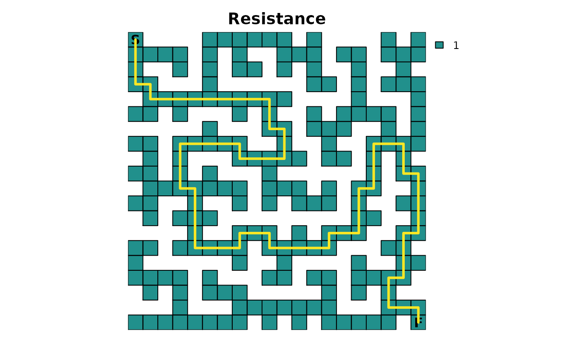
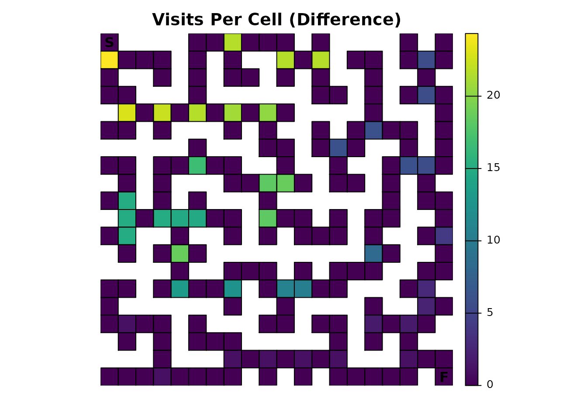
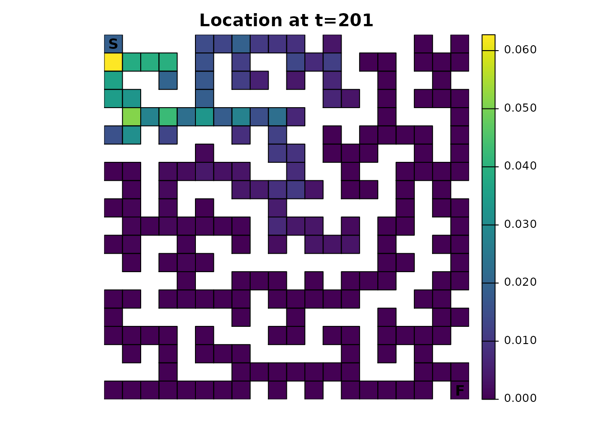
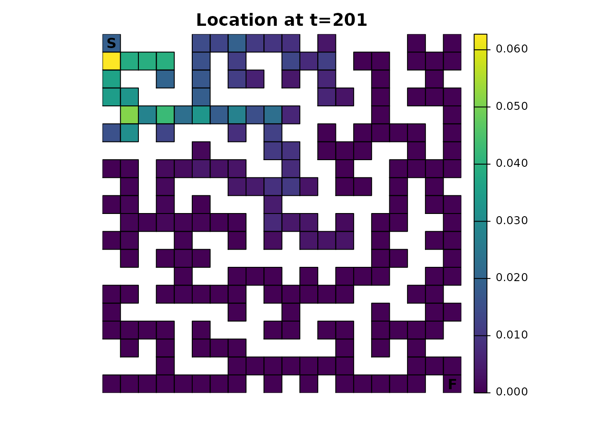
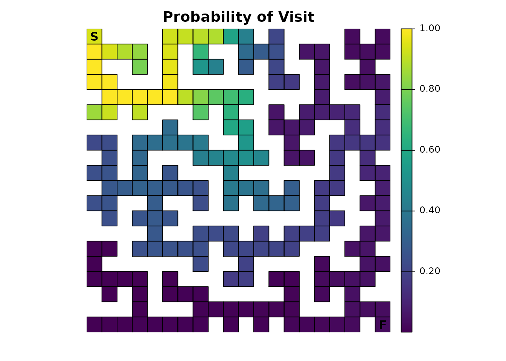

Introduction
In Part 1 of this series, we explored the applications of absorbing Markov chains in the context of a simple perfect maze. In Part 2, we will expand on our simple maze in various ways and explore how these changes affect our interpretations when using the different metrics offered in the samc package.
Setup
This example reuses the libraries, setup, and original samc object code from Part 1.
Fidelity
We’ll start by incorporating fidelity into the samc object. In Part 1, transitions always occurred from one cell to a different neighboring cell. With fidelity, we have the ability for transitions to occur from a cell to itself; essentially, there’s no movement over the course of a time step. There are potentially many different ways that fidelity could be applied to the maze, but we’ll keep things simple by using it to create a delay in movement at intersections. The goal will be to model hesitancy when the individual is presented with the choice of three or more paths. For simplicity, we’ll only set the fidelity at all intersections to the same 0.1 value, which basically means that once an individual is at an intersection, there is a 10% probability that they will stay in the intersection from one time step to the next.
# Intersections determined using a moving window function
maze_ints <- focal(maze, w = matrix(c(NA, 1, NA, 1, 1, 1, NA, 1, NA), nrow = 3, ncol = 3), fun = function(x){sum(!is.na(x)) > 3}, pad = TRUE)
maze_ints[is.na(maze)] <- NA
maze_ints <- maze_ints * 0.1
maze_plot(maze_ints, "Intersections", vir_col)
Fidelity changes the \(P\) matrix underlying the samc object, which means we have to create a new samc object:
samc_ints <- samc(maze, maze_finish, maze_ints, tr_args = tr)To start, let’s see how the new fidelity input affects our expected time to finish:
# Our original results from Part 1
survival(samc_obj)[start]
#> [1] 13869
cond_passage(samc_obj, start, finish)
#> [1] 13868
# Our results with fidelity at intersections
survival(samc_ints)[start]
#> [1] 14356
cond_passage(samc_ints, start, finish)
#> [1] 14355Intuitively, since we’ve added “hesitation” to the movement, the expected time to finish increases. We also see that incorporating fidelity in this particular example does not affect the relationship between survival() and cond_passage().
Looking at the probability of visiting any particular cell, changing the fidelity does not change the results from part 1:
disp <- dispersal(samc_obj, origin = start)
#>
#> Cached diagonal not found.
#> Performing setup. This can take several minutes... Complete.
#> Calculating matrix inverse diagonal...
#>
Complete
#> Diagonal has been cached. Continuing with metric calculation...
disp_ints <- dispersal(samc_ints, origin = start)
#>
#> Cached diagonal not found.
#> Performing setup. This can take several minutes... Complete.
#> Calculating matrix inverse diagonal...
#>
Complete
#> Diagonal has been cached. Continuing with metric calculation...
all.equal(disp, disp_ints)
#> [1] TRUEFidelity does, however, change the number of times each cell is expected to be visited:
visit_orig <- visitation(samc_obj, origin = start)
visit_ints <- visitation(samc_ints, origin = start)
all.equal(visit_orig, visit_ints)
#> [1] "Mean relative difference: 0.03511428"
# Let's plot the difference to see if there is a noticeable pattern
visit_diff <- map(samc_obj, visit_ints) - map(samc_obj, visit_orig)
maze_plot(visit_diff, "Visits Per Cell (Difference)", viridis(256))With fidelity present, the intersections are seeing a significantly different number of visits. Basically, since a “visit” represents a transition to a cell from one time step to the next, the presence of fidelity means that the metric is counting transitions from a cell to itself as well. Interestingly, when compared to the figure in Part 1, the legend in this figure seems to indicate that the increase for the intersections might actually be 10%, or the same as the fidelity probabilities. It also seems like the non-intersections experienced no change. Let’s check these ideas:
# First, let's see which cells changed.
# Ideally, we would just use `visit_diff > 0`, but we have floating point precision issues here, so we will approximate it
maze_plot(visit_diff > tolerance, "Visits With Non-Zero Difference", vir_col)
# Second, let's see what the percent change is for our non-zero differences.
visit_perc <- (visit_ints - visit_orig) / visit_orig
visit_perc[visit_perc>tolerance]
#> [1] 0.1111111 0.1111111 0.1111111 0.1111111 0.1111111 0.1111111 0.1111111
#> [8] 0.1111111 0.1111111 0.1111111 0.1111111 0.1111111 0.1111111 0.1111111
#> [15] 0.1111111 0.1111111 0.1111111 0.1111111 0.1111111 0.1111111 0.1111111
#> [22] 0.1111111 0.1111111 0.1111111 0.1111111 0.1111111 0.1111111 0.1111111
#> [29] 0.1111111 0.1111111 0.1111111 0.1111111 0.1111111 0.1111111 0.1111111
#> [36] 0.1111111 0.1111111 0.1111111 0.1111111 0.1111111 0.1111111 0.1111111
#> [43] 0.1111111
It turns out that there is no change in the number of expected visits for non-intersections. It also turns out that our hunch for the intersections was only partially true; the change is constant, but it’s 1/9 instead of 0.1 or 10%.
The most interesting change we might see from incorporating fidelity will be with the distribution() metric. Recall from Part 1 that there was an alternating pattern with the cells when changing the time steps. With fidelity, this effect still exists, but not to the same degree:
dist_ints <- distribution(samc_ints, origin = start, time = 20)
maze_plot(map(samc_ints, dist_ints), "Location at t=20", viridis(256))
dist_ints <- distribution(samc_ints, origin = start, time = 21)
maze_plot(map(samc_ints, dist_ints), "Location at t=21", viridis(256))Given a sufficient amount of time, the cumulative effect of having fidelity present will almost entirely eliminate the alternating pattern. Even from time steps 200-201, the alternating pattern is visually nearly gone:
dist_ints <- distribution(samc_ints, origin = start, time = 200)
maze_plot(map(samc_ints, dist_ints), "Location at t=200", viridis(256))
dist_ints <- distribution(samc_ints, origin = start, time = 201)
maze_plot(map(samc_ints, dist_ints), "Location at t=201", viridis(256))
For comparison, here’s the original samc object using the same time steps:
dist <- distribution(samc_obj, origin = start, time = 200)
maze_plot(map(samc_obj, dist), "Location at t=200", viridis(256))
dist <- distribution(samc_obj, origin = start, time = 201)
maze_plot(map(samc_obj, dist), "Location at t=201", viridis(256)) 

Dead End Avoidance
Technically, the package doesn’t offer the ability to “look ahead” at future states to adjust the transition probabilities. In other words, if a route would eventually lead to a dead end, there’s nothing in the samc() function or the metric functions to account for that or model the possibility that an individual in the maze can see down a hallway. We can, however, fake it somewhat by adjusting the resistance map so that the dead ends have a much higher resistance. This will reduce the probability of an individual entering a dead end, almost as if they looked ahead. We can use a sliding window function to create this new map:
# Dead ends
maze_ends <- focal(maze, w = matrix(c(NA, 1, NA, 1, 1, 1, NA, 1, NA), nrow = 3, ncol = 3), fun = function(x){sum(!is.na(x)) == 2}, pad = TRUE)
maze_ends[is.na(maze)] <- NA
maze_ends <- maze_ends * 9 + 1
maze_ends[20, 20] <- 1
maze_plot(maze_ends, "Dead Ends", vir_col)
We have given the dead ends a resistance value of 10, which is relatively high and means that dead ends will only rarely be entered. Since we’ve modified our resistance map, we need to update the samc object. We will not use our fidelity data from the previous section, which will allow us to compare directly against the model created in Part 1.
samc_ends <- samc(maze_ends, maze_finish, tr_args = tr)Hypothetically, since an individual can now “look ahead”, they should be able to get through the maze faster because they are spending less time in dead ends. We can see this easily:
# Our original results from Part 1
survival(samc_obj)[start]
#> [1] 13869
cond_passage(samc_obj, start, finish)
#> [1] 13868
# Our results with dead ends
survival(samc_ends)[start]
#> [1] 11313
cond_passage(samc_ends, start, finish)
#> [1] 11312Since the dead ends have a lower probability of being transitioned to, the dispersal() and visitation() metrics should obviously reflect that:
disp_ends <- dispersal(samc_ends, origin = start)
#>
#> Cached diagonal not found.
#> Performing setup. This can take several minutes... Complete.
#> Calculating matrix inverse diagonal...
#>
Complete
#> Diagonal has been cached. Continuing with metric calculation...
maze_plot(map(samc_obj, disp_ends), "Probability of Visit", viridis(256))
visit_ends <- visitation(samc_ends, origin = start)
maze_plot(map(samc_obj, visit_ends), "Visits Per Cell", viridis(256))The effect is more obvious with visitation() and the expected number of visits; the probability illustration is more subtle compared to the original results in Part 1. This could be explored similarly to how some of the differences in the fidelity section are illustrated, an exercise that will be left to interested readers.
Traps
It’s fairly to trivial to add lethal traps to our maze; it just requires updating our absorption input to the samc() function. The key thing to keep in mind is that samc() expects the total absorption, so we will only be giving it a single absorption input. However, our metrics do allow us to tease apart the role that different sources of absorption will have in the model. There are two different approaches to setting this up:
- We start with a single total absorption input. Then we take that input and decompose it into multiple absorption components.
- We start with multiple absorption components. Then we take those inputs and combine them into a single total absorption input.
The choice really depends on the data available and the goals of the project. For example, the former strategy is useful if we’ve somehow measured total absorption for a model and want to explore different hypotheses for how it breaks down into different types of absorption. The former is useful if we already have direct knowledge of different sources of absorption. For this example, we’re going with the latter; we already have one absorption component for our finish point, and now we are going to create a second simple one that represents a few traps with a 0.2 or 20% absorption probability:
# Traps absorption layer
maze_traps <- maze * 0
maze_traps[17, 3] <- 0.2
maze_traps[1, 9] <- 0.2
maze_traps[6, 20] <- 0.2
maze_plot(maze_traps, "Traps", vir_col)
In order to use this, we will have to create a new samc object:
abs_total <- maze_finish + maze_traps
samc_traps <- samc(maze, abs_total, tr_args = tr)We’re again only modifying the basic example from Part 1 for easy comparison. Like our other changes, let’s see how long we now expect it to take for an individual to finish the maze:
# Our original results from Part 1
survival(samc_obj)[start]
#> [1] 13869
cond_passage(samc_obj, start, finish)
#> [1] 13868
# Our results with traps
survival(samc_traps)[start]
#> [1] 1330.26
cond_passage(samc_traps, start, finish)
#> [1] 3060.207The results are drastically different from what we’ve seen before. First, we no longer have the clear relationship between survival() and cond_passage(). This is becausesurvival() no longer gives us information on how long it will take to finish; instead it now tells us long it will take to either finish or die to one of our traps. This also drastically changes what we see when plotting the results of survival() (note the change in figure title from Part 1 to reflect the new interpretation):
survive_traps <- survival(samc_traps)
# Note the updated title from part 1
maze_plot(map(samc_obj, survive_traps), "Expected Time to Absorption", viridis(256))
We also see drastically different results from Part 1 when looking at visitation probability and number of visits:
disp_traps <- dispersal(samc_traps, origin = start)
#>
#> Cached diagonal not found.
#> Performing setup. This can take several minutes... Complete.
#> Calculating matrix inverse diagonal...
#>
Complete
#> Diagonal has been cached. Continuing with metric calculation...
maze_plot(map(samc_traps, disp_traps), "Probability of Visit", viridis(256))
visit_traps <- visitation(samc_traps, origin = start)
maze_plot(map(samc_traps, visit_traps), "Visits Per Cell", viridis(256))
Importantly, we can longer use the same technique as Part 1 where we used visitation probabilities of 1.0 to identify the route through the maze; it only works in very specialized cases. The reason is simple: since the individual can now be absorbed in other locations, there is a non-zero probability that they never reach the finish, which in turn means the probability of visiting the finish is now less than 1.0. However, we can still use the same technique to see something interesting:
# Ideally, we would just use `as.numeric(disp == 1)`, but we have floating point precision issues here, so we will approximate it
disp_traps_route <- as.numeric(abs(disp_traps - 1) < tolerance)
maze_plot(map(samc_traps, disp_traps_route), "dispersal() == 1", vir_col)
It shows us part of the solution we saw before, but only up to the first maze intersection that leads to two or more possible sources of absorption.
The inclusion of multiple absorption states now allows us to explore metrics that were not useful of Part 1. Starting with mortality(), we can visualize where we would expect the individual to be absorbed:
mort_traps <- mortality(samc_traps, origin = start)
maze_plot(map(samc_traps, mort_traps), "Absorption Probability", viridis(256))
That quite possibly is not what we would have expected. Why does the finish point look like it’s 0? Let’s look at the numbers and see if we can figure it out from there:
mort_traps[mort_traps > 0]
#> 5 65 170 215
#> 0.852084306 0.113761093 0.003940915 0.030213685
mort_traps[finish]
#> 215
#> 0.03021369There’s only a 3.0% chance of our individual finishing the maze! This seems really low given our traps are only lethal 20% of the time, but if we stop to think about it, it actually makes sense. Recall the Probability of visiting a cell and Visits per cell sections from Part 1; the individual spends most of their time in the early part of the maze. That means they have a lot more exposure to our first trap and, consequently, are more likely to be absorbed there with a 85.2% probability. If we look at the trap farthest from the start, reaching it first requires passing by the finish, so consequently it has only a 0.39% of being the source of absorption, a substantially lower probability than just finishing the maze.
The package allows us to break things down so that we can investigate the role of different types of mortality more easily. Remember, we started with two absorption layers that we summed together; now that the samc object has been created, we can provide it that information:
# Naming our rasters will make things easier and less error-prone later
names(maze_finish) <- "Finish"
names(maze_traps) <- "Traps"
samc_traps$abs_states <- raster::stack(maze_finish, maze_traps)By doing so, the mortality() metric now returns a list with information about not just the total absorption, but the individual components we specified. This allows us to individually access and visualize the role of different types of absorption:
mort_traps <- mortality(samc_traps, origin = start)
str(mort_traps)
#> List of 3
#> $ total : Named num [1:215] 0 0 0 0 0.852 ...
#> ..- attr(*, "names")= chr [1:215] "1" "2" "3" "4" ...
#> $ Finish: Named num [1:215] 0 0 0 0 0 0 0 0 0 0 ...
#> ..- attr(*, "names")= chr [1:215] "1" "2" "3" "4" ...
#> $ Traps : Named num [1:215] 0 0 0 0 0.852 ...
#> ..- attr(*, "names")= chr [1:215] "1" "2" "3" "4" ...
maze_plot(map(samc_traps, mort_traps$Finish), "Absorption Probability (Finish)", viridis(256))
maze_plot(map(samc_traps, mort_traps$Traps), "Absorption Probability (Traps)", viridis(256))
We can also now make use of the absorption() metric:
absorption(samc_traps, origin = start)
#> Finish Traps
#> 0.03021369 0.96978631The output from this is quite simple: it tells us the probability that the individual will experience a particular type of absorption. So as we saw before, there is a 3.0% chance of finishing the maze. But now we see that there is a 97.0% total probability that absorption will occur in one of the three traps. This is different from the mortality() metric, which tells us the absorption probabilities at each cell. There’s clearly a relationship between the two metrics, and the advantage of this example is that it’s easy to see it; in more complex examples, it’s more difficult to see how the two metrics are related.